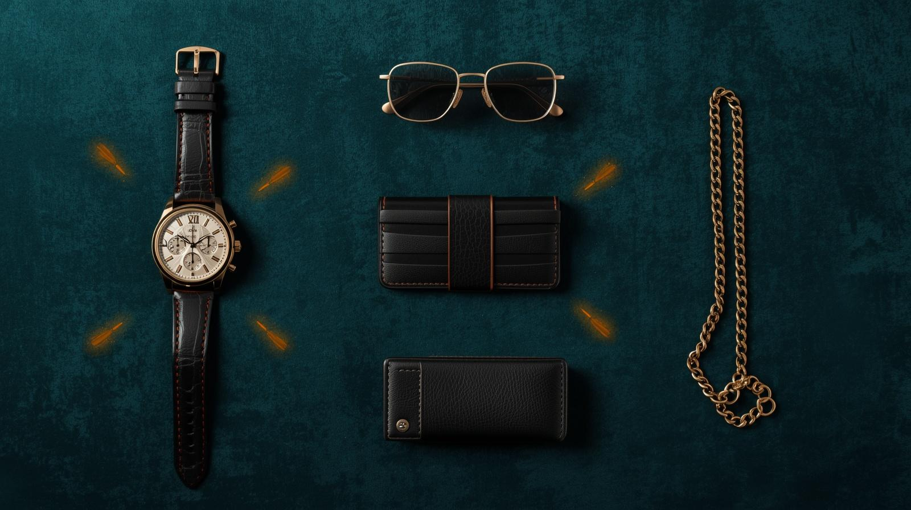

KakoBuy Jersey: Stitching, Customization & Fit QC (2026)

Jerseys: Detail-Intensive QC
KakoBuy jersey QC is the most detail-intensive of any category. Player names, numbers, team badges, league patches, and sponsor logos — each stitched or heat-pressed element needs individual inspection. One misspelled name makes the entire jersey unusable.
Stitching vs Heat Press: Know the Difference
Stitched elements have raised thread you can feel. Heat-pressed elements are flat and smooth. Stitching is generally more durable but more expensive. Heat press can look cleaner but may peel over time. Know which you are getting and QC accordingly.
The Text Verification Protocol
For every jersey: spell-check the player name letter by letter, verify number font and placement against a reference photo, confirm badge and patch positions, and check all sponsor logos. Document each element in your spreadsheet notes as Passed or Flagged.
- Spell-check player name character by character
- Verify number font matches reference
- Check badge and patch positions
- Inspect sponsor logo alignment
- Document each element in your spreadsheet
Frequently Asked Questions
Football/soccer: 200-300g. Basketball: 200-300g. Hockey: 500-800g. Lightweight and cost-effective to ship.
Misspelled or crooked player name customization. Always verify every character against a reference photo before approving.